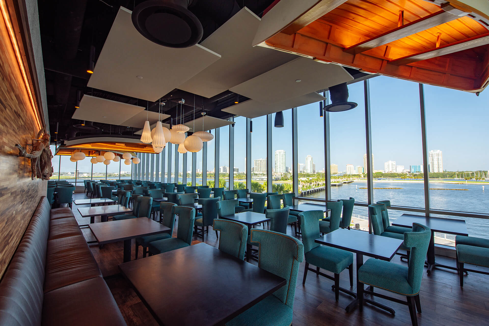
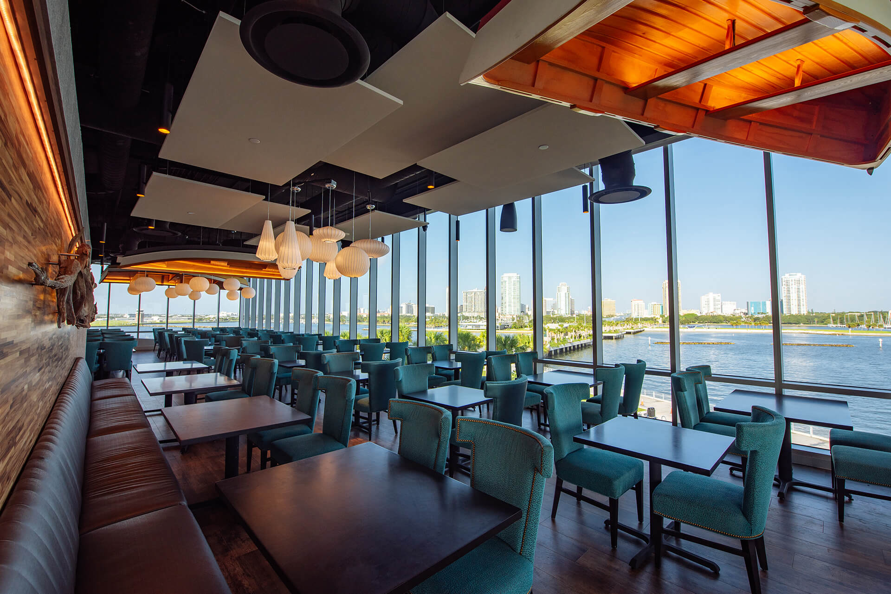

My name is Emery Camp, I am 20 years old, and I am a junior at Elon University. I am majoring in strategic communications with a minor in sports management. I am currently studying the art of HTML language and media design, along with public relations and contemporary sports management. I am a well rounded individual who is looking forward to completing my college education and moving to a big city.
 

While still working on my college degree, I hope to receive my Bachelors of Arts degree in May of 2024. I also received a high school diploma from Shorecrest Preparatory School in Saint Petersburg Florida. I have had an assortment of jobs throughout my life, some in the restaurant industry, retail industry, and child care industry. I worked my first job after senior year of high school as a hostess at the restaurant Teak. My job required me to organize parties, assign tables, offer a warm, welcoming conversation to patrons, and ensure that the restaurant ran smoothly. Once I got to college, I worked a few jobs during winter and summer breaks when at home. I was a retail associate at Nothing Bundt Cakes, where I was responsible for keeping the front of the house clean, giving the customer the retail they wanted, and being positive and welcoming. I also started a few personal businesses on the side. During the holidays, I have a local present wrapping business where I wrap presents for parents with young children who do not have time. I also am a swim instructor and do individual lessons on technique improvement and how to be competitive in the water. My most recent job was last summer working as a camp counselor. I worked at Illahee in Brevard, North Carolina. I was responsible for overseeing the care of 28 girls, running and guarding the lake, and putting the safety and happiness of the campers above all. This summer, I plan to intern with a PR company in New York City, but am still going through the interview process. I have my ALS and WSI certification, as well as CRP and AED certification.